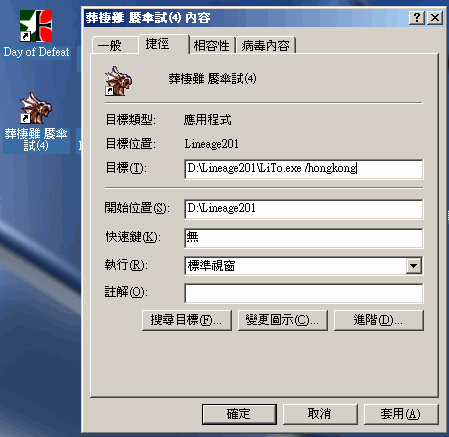
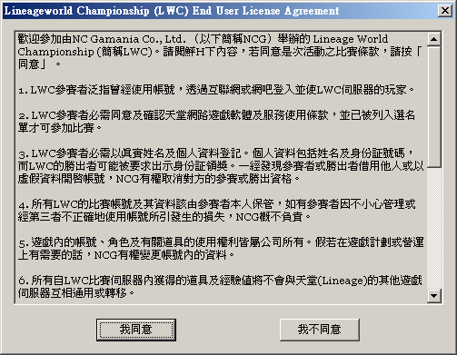
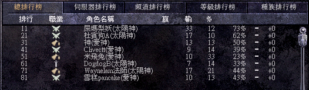
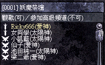

|
2003年7月5日
現在立即玩香港天堂無界擂台的方法
鳴謝玩家Leirb提供資料！這也許是香港天堂2週年送給大家的禮物
:P
雖然香港的天堂無界擂台(LiTo)在7月16日才正式開放，但現在已經有方法可以率先玩了，而且是不用錢的呢！
（此文一出，相信官方很快會關閉伺服器，大家要把握時間！另外一切提早試玩所帶來的後果，本網恕不負責，Play
it at your own risks!
如果大家喜歡天堂無界擂台的玩法，請務必購買官方所推出的天堂Tournament對戰特別版）
方法如下：
1. 在韓國官方網站下載天堂無界擂台(LiTo)的安裝檔案，連結如下：（下載任一連結便可，約40MB）
ftp://kt-linftp.ncsoft.co.kr/LiTo110k.exe
ftp://ha-linftp.ncsoft.co.kr/LiTo110k.exe
2. 安裝有關檔案到閣下的天堂目錄中，例如"C:\Program
Files\Lineage200HK\"。
3. 安裝程式會在桌面建立LiTo的捷徑（亂碼的捷徑名稱），請右按捷徑選"內容"，並加上"/hongkong"參數再按確定。

4.
接著請執行該捷徑，確定你同意條款，之後會有5百多個檔案更新。

5.
假如在更新檔案後出現錯誤，請將天堂目錄內的"LiTo.exe"刪除，並將"LiTo.new"重新命名為"LiTo.exe"，然後再一次執行桌面上的捷徑，這樣會再次更新檔案。（其實只要有已經更新的"LiTo.exe"便可以一次過成功Pack好檔案，這樣便只需下載更新檔案一次，但為免不必要的麻煩（例如大家懷疑有毒）本網不便放出。）
6. 其後你便可以率先進入香港LiTo的伺服器！
PS: 在本文發佈時，我們已經發覺有些玩家正在LiTo伺服器上戰鬥，相信他們有可能是NCG的工作人員，亦有可能和我們一樣使用同樣方法進入LiTo伺服器呢！
:P


另外類似的手法（用"/taiwan"）相信也可以在台灣伺服器上使用，但目前台灣只有開放供內部或網吧使用的LiTo伺服器，因此你不能使用現在的帳號與密碼進入，而在日後台灣正式更新後應該可以用此方法進入。 |